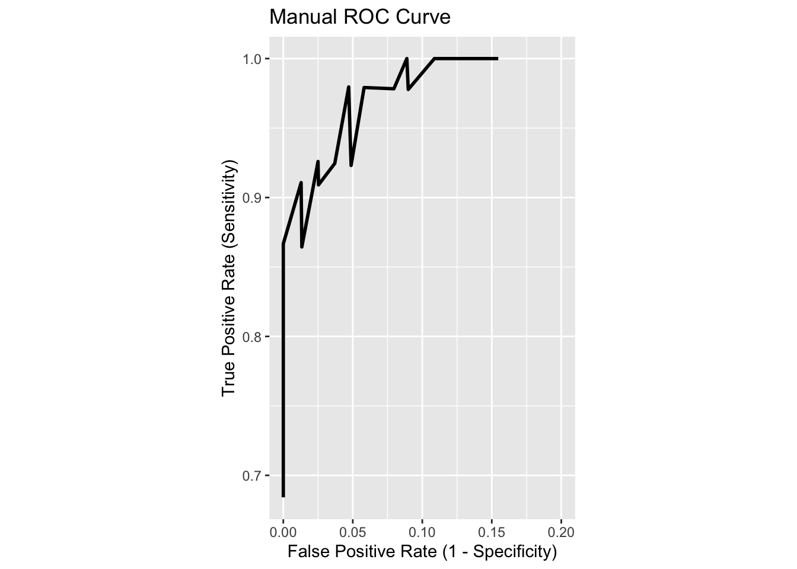
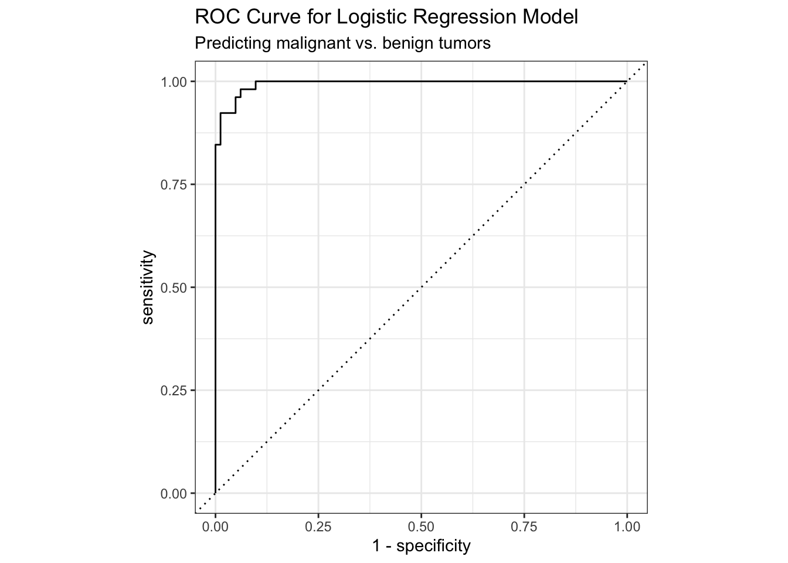
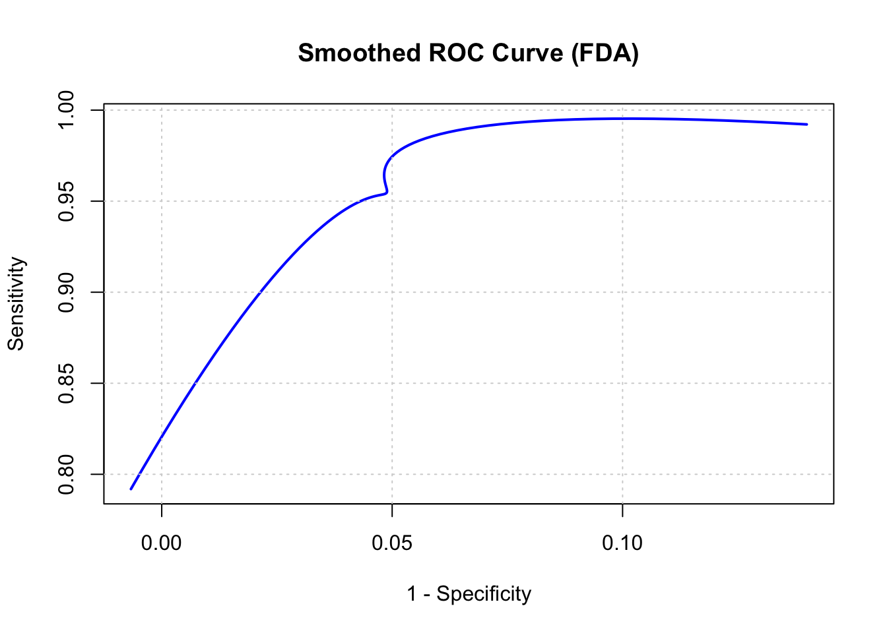
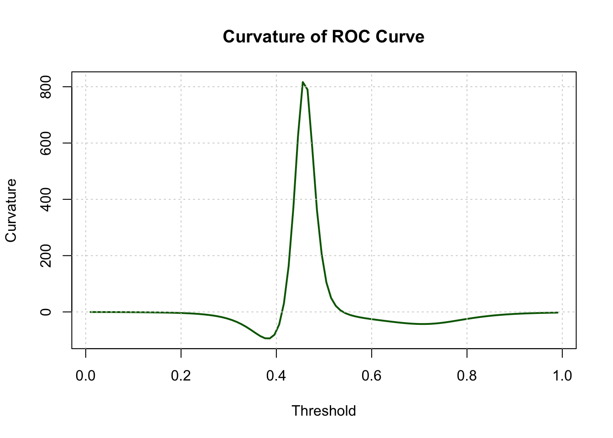

R Packages
library(tidyverse)
library(tidymodels)
library(MASS)
library(fda)
library(threejs)library(tidyverse)
library(tidymodels)
library(MASS)
library(fda)
library(threejs)# Load the biopsy dataset
data(biopsy, package = "MASS")
names(biopsy) <- c("ID",
"clump thickness",
"uniformity of cell size",
"uniformity of cell shape",
"marginal adhesion",
"single epithelial cell size",
"bare nuclei",
"bland chromatin",
"normal nucleoli",
"mitoses",
"class")
# Clean column names and convert the outcome to a factor
biopsy <- biopsy %>%
janitor::clean_names() %>%
mutate(outcome = factor(class, levels = c("malignant", "benign")))# Split the data (a best practice, though not strictly required for this example)
biopsy_split <- initial_split(biopsy, prop = 0.8)
biopsy_train <- training(biopsy_split)
biopsy_test <- testing(biopsy_split)
# Define and fit a logistic regression model
logistic_fit <- logistic_reg() %>%
set_engine("glm") %>%
fit(outcome ~ clump_thickness + uniformity_of_cell_size + uniformity_of_cell_shape +
marginal_adhesion + bare_nuclei, data = biopsy_train)
# Generate predictions on the test set
biopsy_predictions <- predict(logistic_fit, new_data = biopsy_test, type = "prob") %>%
bind_cols(biopsy_test) %>% drop_na()# Create a sequence of thresholds from 0 to 1
thresholds <- seq(0, 1, by = 0.01)
# Calculate TPR and FPR for each threshold
manual_roc_data <- map_dfr(thresholds, ~ {
# For a given threshold, classify predictions as "malignant" or "benign"
predictions_at_threshold <- biopsy_predictions %>%
mutate(
.pred_class = factor(
if_else(.pred_malignant >= .x, "malignant", "benign"),
levels = c("malignant", "benign")
)
)
# Create a confusion matrix
conf_mat <- conf_mat(predictions_at_threshold, truth = outcome, estimate = .pred_class)
# Extract true positives (TP), false positives (FP), etc.
tp <- conf_mat$table["malignant", "malignant"]
fp <- conf_mat$table["benign", "malignant"]
tn <- conf_mat$table["benign", "benign"]
fn <- conf_mat$table["malignant", "benign"]
# Calculate TPR and FPR
tpr <- tp / (tp + fn)
fpr <- fp / (fp + tn)
# Return a tibble row for this threshold
tibble(
.threshold = .x,
sensitivity = tpr, # TPR is equivalent to sensitivity
`1-specificity` = fpr # FPR is equivalent to 1-specificity
)
})
manual_roc_data <- manual_roc_data %>% drop_na()# Plot the Manual ROC Curve
ggplot(manual_roc_data, aes(x = `1-specificity`, y = sensitivity)) +
geom_line(size = 1) +
geom_abline(linetype = "dashed") +
scale_x_continuous(limits = c(0,0.2)) +
labs(
title = "Manual ROC Curve",
x = "False Positive Rate (1 - Specificity)",
y = "True Positive Rate (Sensitivity)"
) +
coord_equal()Warning: Using `size` aesthetic for lines was deprecated in ggplot2 3.4.0.
ℹ Please use `linewidth` instead.
# Calculate ROC curve data
roc_data <- biopsy_predictions %>%
roc_curve(truth = outcome, .pred_malignant)
# Plot the ROC curve
autoplot(roc_data) +
labs(
title = "ROC Curve for Logistic Regression Model",
subtitle = "Predicting malignant vs. benign tumors"
)
biopsy_roc_df <- manual_roc_data |> drop_na()
names(biopsy_roc_df) <- c("threshold", "sensitivity", "one_minus_specificity")
threshold <- biopsy_roc_df$threshold
sensitivity <- biopsy_roc_df$sensitivity
one_minus_specificity <- biopsy_roc_df$one_minus_specificity# roc_data_2 <- roc_data %>% filter(row_number() != 1 & row_number() != n())
#
# roc_data_3 <- roc_data_2 %>% mutate(one_minus_specificity = 1- specificity)
# names(roc_data_3) <- c("threshold", "specificity", "sensitivity", "one_minus_specificity")
#
#
# threshold <- roc_data_3$threshold
# sensitivity <- roc_data_3$sensitivity
# one_minus_specificity <- roc_data_3$one_minus_specificity #Create B-spline basis
#| code-fold: TRUE
#| code-summary: "Shoe the Code"
nbasis <- 5
basis <- create.bspline.basis(rangeval = range(threshold), nbasis = nbasis)
# Fit FDA objects
sens_fd <- smooth.basis(threshold, sensitivity, basis)$fd
spec_fd <- smooth.basis(threshold, one_minus_specificity, basis)$fd
# Evaluate on fine grid
grid <- seq(min(threshold), max(threshold), length.out = 100)
sens_vals <- eval.fd(grid, sens_fd)
spec_vals <- eval.fd(grid, spec_fd)
# Plot ROC curve: sensitivity vs. 1-specificity
plot(spec_vals, sens_vals, type = "l", col = "blue", lwd = 2,
xlab = "1 - Specificity", ylab = "Sensitivity",
main = "Smoothed ROC Curve (FDA)")
grid()
library(fda)
# Clean threshold grid
grid <- seq(min(threshold, na.rm = TRUE), max(threshold, na.rm = TRUE), length.out = 100)
# Derivative operators
D1 <- int2Lfd(1)
D2 <- int2Lfd(2)
# Evaluate derivatives
x1 <- eval.fd(grid, spec_fd, D1)
x2 <- eval.fd(grid, spec_fd, D2)
y1 <- eval.fd(grid, sens_fd, D1)
y2 <- eval.fd(grid, sens_fd, D2)
# Curvature formula
curvature <- (x1 * y2 - y1 * x2) / ((x1^2 + y1^2)^(3/2))
# Plot
plot(grid, curvature, type = "l", col = "darkgreen", lwd = 2,
xlab = "Threshold", ylab = "Curvature",
main = "Curvature of ROC Curve")
grid()
curvature_df <- data.frame(grid, x1, x2, y1, y2, curvature)`
grid <- seq(min(threshold, na.rm = TRUE), max(threshold, na.rm = TRUE), length.out = 400)
# Evaluate ROC components
x_vals <- eval.fd(grid, spec_fd) # 1 - specificity
y_vals <- eval.fd(grid, sens_fd) # sensitivity
# Derivatives for curvature
D1 <- int2Lfd(1)
D2 <- int2Lfd(2)
x1 <- eval.fd(grid, spec_fd, D1)
x2 <- eval.fd(grid, spec_fd, D2)
y1 <- eval.fd(grid, sens_fd, D1)
y2 <- eval.fd(grid, sens_fd, D2)
# Curvature
z_vals <- (x1 * y2 - y1 * x2) / ((x1^2 + y1^2)^(3/2))
# Combine into a 3-column matrix
roc_matrix <- cbind(x_vals, y_vals, z_vals)
# Normalize curvature for color gradient
curv_scaled <- (z_vals - min(z_vals)) / (max(z_vals) - min(z_vals))
color_map <- rgb(curv_scaled, 1 - curv_scaled, 0.5)
# Plot 3D ROC surface
scatterplot3js(x = roc_matrix,
color = color_map,
size = 0.1,
labels = round(grid, 3),
xlab = "1 - Specificity",
ylab = "Sensitivity",
zlab = "Curvature")Warning in ans[i] <- sprintf("%.2e", x): number of items to replace is not a
multiple of replacement lengthClinical Tip If 1-specificity is flat or sparse, consider modeling it jointly with sensitivity using a multivariate FDA approach or regularized smoothing. I can help you build a joint basis or penalized functional regression if needed.
## Check for NA in grid
anyNA(grid) # Should return FALSE[1] FALSE#if true rebuild grid explicitly
#grid <- seq(min(threshold, na.rm = TRUE), max(threshold, na.rm = TRUE), length.out = 100)Sometimes smooth.basis() returns an fd object with internal NA values if the input data is sparse or constant (e.g., all zeros for 1-specificity). You can check:
summary(spec_fd)Functional data object:
Dimensions of the data:
time
reps
values
Basis object:
Type: bspline
Range: 0.01 to 0.99
Number of basis functions: 5
Order of spline: 4
[1] " Interior knots"
[1] 0.5
Coefficient matrix: [,1]
bspl4.1 -0.006681041
bspl4.2 0.035097962
bspl4.3 0.062753426
bspl4.4 0.034954436
bspl4.5 0.139958278summary(sens_fd)Functional data object:
Dimensions of the data:
time
reps
values
Basis object:
Type: bspline
Range: 0.01 to 0.99
Number of basis functions: 5
Order of spline: 4
[1] " Interior knots"
[1] 0.5
Coefficient matrix: [,1]
bspl4.1 0.7919002
bspl4.2 0.9765486
bspl4.3 0.9190431
bspl4.4 1.0074063
bspl4.5 0.9921610If spec_fd is flat (e.g., all coefficients zero), try increasing nbasis or using a regularization parameter:
lambda <- 1e-4
fdPar_obj <- fdPar(basis, Lfdobj = int2Lfd(2), lambda = lambda)
spec_fd <- smooth.basis(threshold, one_minus_specificity, fdPar_obj)$fd